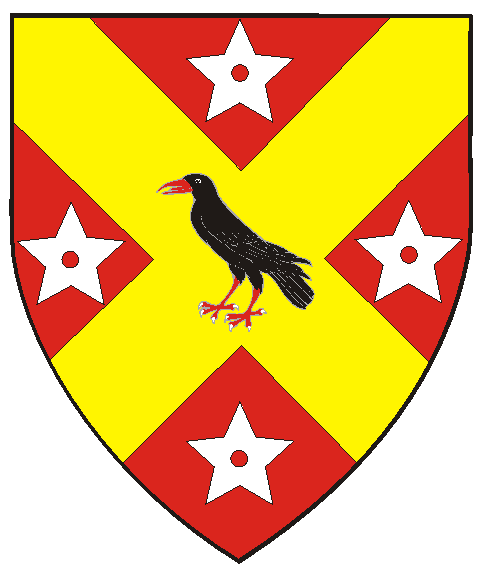
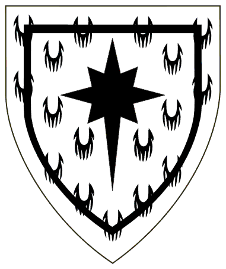
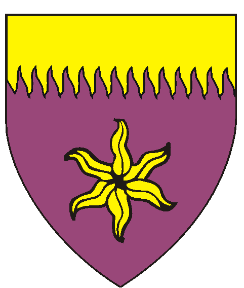
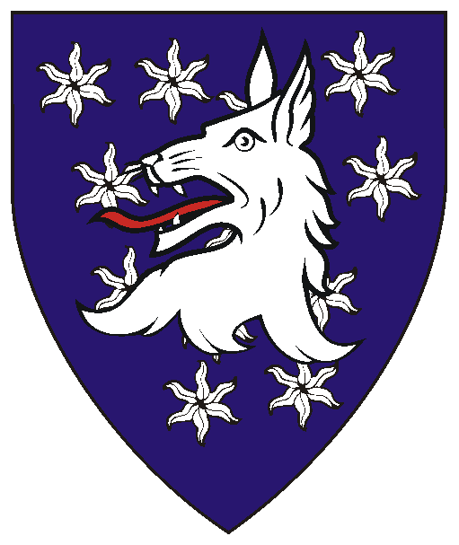

The Oertha Armorial
Awards of Arms (Simple Order of Precedence)
AA's Part V
Updated 01/05/26
Anyone with the following:
has no with the College of Arms
Anyone with this border:
Most of the information herein is based on the West Kingdom Order of Precedence,
Award of Arms October 6, AS XXXVII (2002) Thorfinn & Cyneswith

Award of Arms April 3, AS XXXVIII (2004) Cyrus & Amber

Award of Arms July 18, AS XXXIX (2004) Cyrus & Amber

Award of Arms January 13, AS XLI (2007) Fergus & Margarita

Award of Arms May 31, AS XLIII (2008) Cyrus & Gwyneth
Cymidia Macha of the Ironwood Mountains
To the Patents (Knights, Laurels, Pelicans)
To the Grants of Arms, Leaves of Achievement, and Court Baronies : Part I
Awards of Arms Part V
To the AA's Part VI
To the AA's Part VII
Emblazons Marked with "RR" involve artwork of Robert Rootes,

Blazons without visual shield/designs are in the works.
has their AA but are not in the official Order of Precedence
or the O.P.'s of other Kingdoms.
Contact me to forward corrections or with name/spelling preferences.
AWARDS OF ARMS
Armigers of Oertha (continued)
from January A.S. XXXV (2002)
the Reign of Magnus and Esperanza
to January A.S. XLIV (2010)
the end of the Reign of Fathir and Etain)
Tasha O'Wray (aka Tasha O'Wray of Limerick)
Award of Arms May 25, AS XXXVII (2002) Patrick & Katla
Tyvalt of Clan Tean
Award of Arms June 22, AS XXXVII (2002) Patrick & Katla
Kaeso Octoberavius
Award of Arms June 22, AS XXXVII (2002) Patrick & Katla
Thorgrim Hauksson
Award of Arms August 11, AS XXXVII (2002) Fergus & Margarita
Sybilla von Lichtenstein
Award of Arms August 11, AS XXXVII (2002) Fergus & Margarita
Award of Arms July 15, AS XLI (2006) Dietrich & Rosaline
Adelaide Webster
Award of Arms August 31, AS XXXVII (2002) Fergus & Margarita
Cuan BranDubh (Talon Ironscribe)
Award of Arms September 7, AS XXXVII (2002) Fergus & Margarita
Issobella de Johnstone
Award of Arms September 14, AS XXXVII (2002) Atlantia
Valentina de la Bere

Vert, a bear passant and on a point pointed argent a heart gules.
Nathaniel Blackhawk
Award of Arms December 13, AS XXXVII (2002) Thorfinn & Cyneswith
Amber Bloodworth
Award of Arms December 13, AS XXXVII (2002) Thorfinn & Cyneswith
Subadia [of Earngyld]
Award of Arms December 13, AS XXXVII (2002) Thorfinn & Cyneswith
Llywella de Molay
Award of Arms December 13, AS XXXVII (2002) Thorfinn & Cyneswith
Anastasiia Mikhailova
Award of Arms January 18, AS XXXVII (2003) Fergus & Margarita
Hans Deplorable
Award of Arms May 24, AS XXXVIII (2003) Alden & Constantina
Vivienne la Louve
Award of Arms July 20, AS XXXVIII (2003) Magnus & Esperanza
Iago r Cerddwr ap Ieuan (aka Walker of Ravensfjord)
Award of Arms July 20, AS XXXVIII (2003) Magnus & Esperanza
Leod of Greenshield
Award of Arms July 20, AS XXXVIII (2003) Magnus & Esperanza
Novella de Lorenze
Award of Arms December 6, AS XXXVIII (2003) Richenza & Dietrich
Rowan ny Tiernan
Award of Arms December 6, AS XXXVIII (2003) Richenza & Dietrich
Meadbhb ingen Sulibeain
Award of Arms December 13, AS XXXVIII (2003) Richenza & Dietrich
Antoinette of Skilak
Award of Arms December 13, AS XXXVIII (2003) Richenza & Dietrich
Adísa hrafn Úlfsdóttir
Gules, on a saltire Or between four mullets pierced argent, a raven sable.
Veronica of Winters Gate
Award of Arms April 3, AS XXXVIII (2004) Cyrus & Amber
Mairghread Siobhan
Award of Arms April 17, AS XXXVIII (2004) Cyrus & Amber
Aingeal Kelliher
Award of Arms April 17, AS XXXVIII (2004) Cyrus & Amber
Colyne Jak Leslie
Ermine, a compass star elongated to base and an orle sable.
Gwenhyvar ferch Rinn
Award of Arms August 21, AS XXXIX (2004) Fergus & Margarita
Thomas Ewan of Pavlosk Gavan
Award of Arms November 13, AS XXXIX (2004) Fergus & Margarita
Hakim al-Basim ibn Rashid
Award of Arms January 15, AS XXXIX (2005) Alden & Constantina
TaMarcha of Oertha
Award of Arms July 16, AS XL (2005) Buliwyf & Svana
Vilianna Raven Hair
Award of Arms July 16, AS XL (2005) Buliwyf & Svana
Mad Marchdigan of Oertha
Award of Arms November 12, AS XL (2005) Magnus & Esperanza
Asta Magnusdooter
Award of Arms January 14, AS XL (2006) Fabian & Eliska
Elizabeth Grenewode
Award of Arms January 14, AS XL (2006) Fabian & Eliska
Brendan Doyle
Award of Arms January 14, AS XL (2006) Fabian & Eliska
Kiera of Eskalya
Award of Arms January 14, AS XL (2006) Magnus & Esperanza
Grisulis Hilarious Gladious
Award of Arms February 4, AS XL (2006) Dietrich & Rosaline
Sabine [of Oertha]
Award of Arms February 4, AS XL (2006) Dietrich & Rosaline
Caoimnhal Dubhease der Alcan
Award of Arms February 11, AS XL (2006) Dietrich & Rosaline
Suzuki Ryujiro Nobuuji
Award of Arms April 22, AS XL (2006) Dietrich & Rosaline
Merewen of Cottesmore
Award of Arms October 28, AS XLI (2006) Rolf & Aurora
Francesca Carletti
Purpure, an estoile and a chief rayonny Or.
Kay Skyfyre
Award of Arms January 14, AS XLI (2007) Fergus & Margarita
Michael of Pavlosk Gavan
Award of Arms January 14, AS XLI (2007) Fergus & Margarita
Angus MacFarland
Award of Arms January 14, AS XLI (2007) Cyrus & Caitríona
Johannes von der Pfalz
Award of Arms February 17, AS XLI (2007) Cyrus & Caitríona
Ceara MacKeagan
Award of Arms March 24, AS XLI (2007) Cyrus & Caitríona
Avis of Pavlok Gorod (aka Sandy of Pavlok Gorod)
Award of Arms March 31, AS XLI (2007) Cyrus & Caitríona
Catairiona Inghean ui Dhomhnaill
Award of Arms May 27, AS XLII (2007) Cyrus & Caitríona
Dearhbhail Dubhghaill
Award of Arms July 22, AS XLII (2007) Jade & Kaaren
Marchy of Hrafnaforðr
Award of Arms July 22, AS XLII (2007) Jade & Kaaren
Scythia of Hrafnaforðr
Award of Arms July 22, AS XLII (2007) Jade & Kaaren
Marchgaret McCalum
Award of Arms November 10, AS XLII (2007) Dietrich & Bianca
Gregorius [of Earngyld]
Award of Arms November 10, AS XLII (2007) Dietrich & Bianca
Leonard of Selviergard
Award of Arms December 8, AS XLII (2007) Hauoc & Ginevra
Magdalena Ginerve de Franco
Award of Arms December 8, AS XLII (2007) Hauoc & Ginevra
Seamus mac Eoghain
Award of Arms May 31, AS XLIII (2008) Cyrus & Gwyneth
Cera inigena Corbbi
Azure estoilly, a wolf's head erased argent.
Angus MacLaren
Award of Arms July 20, AS XLIII (2008) Titus & Eilis
Morgi [of Oertha]
Award of Arms July 20, AS XLIII (2008) Cyrus & Gwyneth
Elenore Corie Bengrek
Award of Arms September 20, AS XLIII (2008) Karl & Élise
Rowena of Pavlok Gorod
Award of Arms October 25, AS XLIII (2008) Karl & Élise
Jacklyn Bell
Award of Arms October 25, AS XLIII (2008) Karl & Élise
Genevieve Beauvais
Award of Arms December 6, AS XLIII (2008) Karl & Élise
Hrefna Amundsdottir
Award of Arms December 6, AS XLIII (2008) Karl & Élise
Johanna Amundsdottir
Award of Arms December 6, AS XLIII (2008) Karl & Élise
Olav Amundsson
Award of Arms December 6, AS XLIII (2008) Karl & Élise
Yukiko Yamamoto
Award of Arms January 18, AS XLIII (2009) Karl & Élise
Nigel Lostwolf
Award of Arms January 18, AS XLIII (2009) Jade & Catherine
Giacomo Avacarro di Firenze
Award of Arms April 18, AS XLIII (2009) Fathir & Étaín
Isolde of Bavaria
Award of Arms May 2, AS XLIV (2009) Fathir & Étaín
Award of Arms May 30, AS XLIV (2009) Fathir & Étaín
To the Armorial Start Page
Starting January, AS XLIV (2010) to December, LIV (2019)
Starting January, AS LIV (2020) to Present
a member of the Canton Ynys Taltraeth.
Some artwork provided by owners of arms depicted.
Most artwork on these pages created with CorelDraw!3-9 by Khevron.